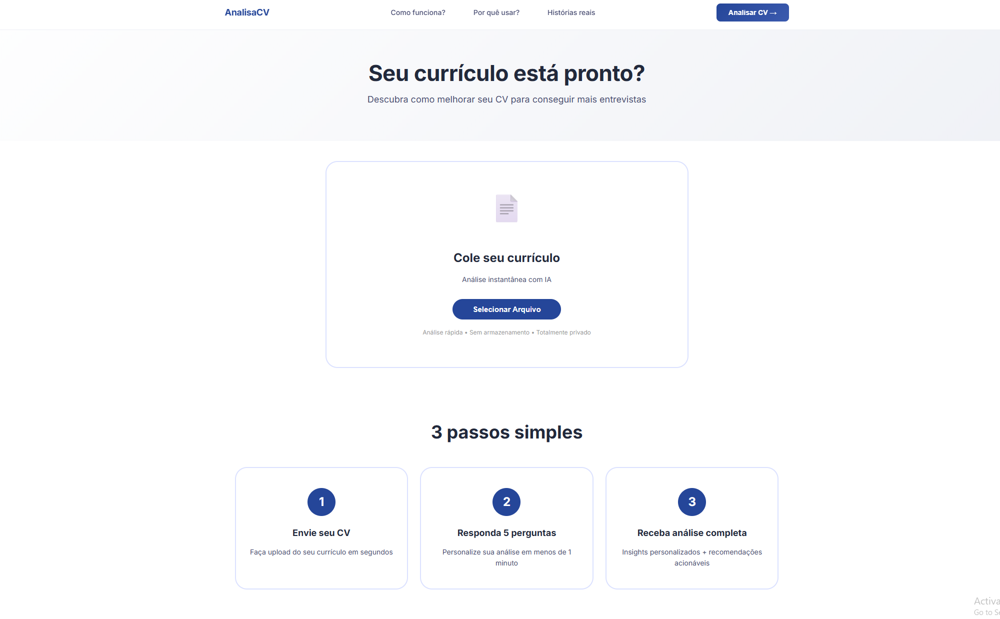

analisa-cv
produçãoProduto completo em produção (analisacv.com.br). Frontend em JavaScript puro (sem framework), HTML e CSS, com PDF.js para extrair texto de currículos enviados em PDF e html2pdf para exportar o resultado. O backend roda como Vercel Edge Functions, também em JavaScript, e envia o texto extraído para a API da Anthropic (modelo Claude Haiku) que faz a análise e reescrita estruturada. Cobrança via Pix (Mercado Pago) e cartão (Stripe).
Uso de IA: desenvolvido com o Claude Code (Anthropic) como principal ferramenta de escrita de código — eu direcionei arquitetura, decisões de produto e revisei o resultado, mas a IA gerou a maior parte da implementação.
